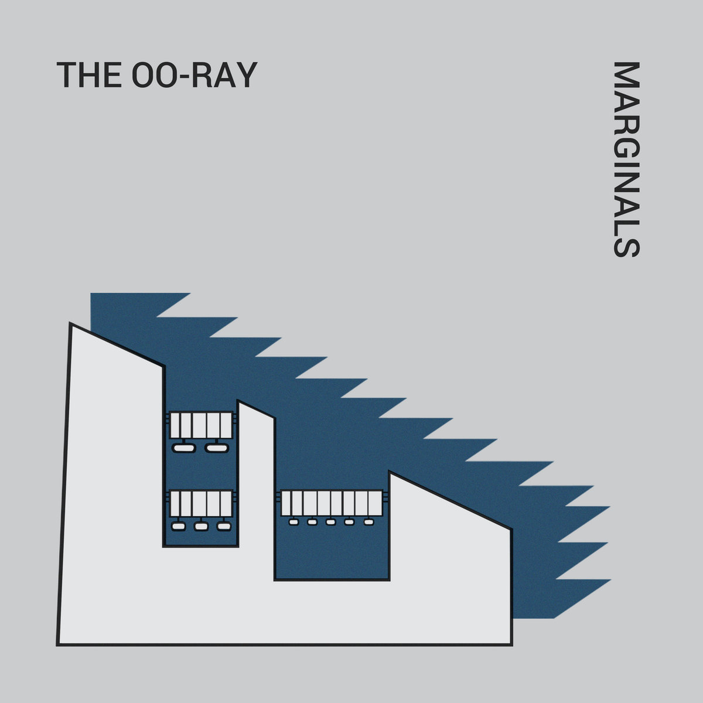
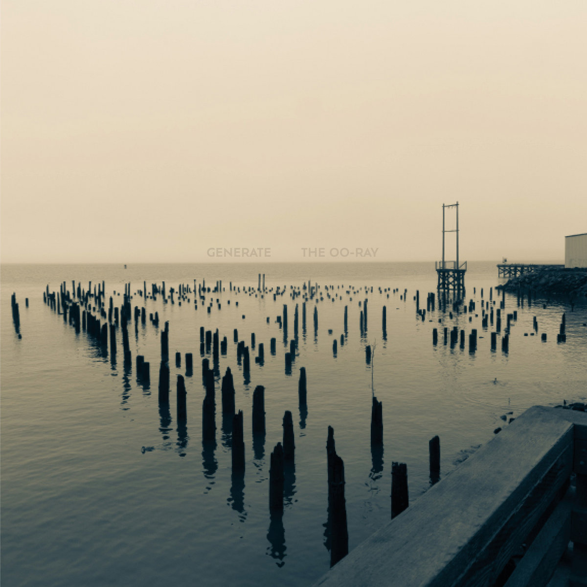
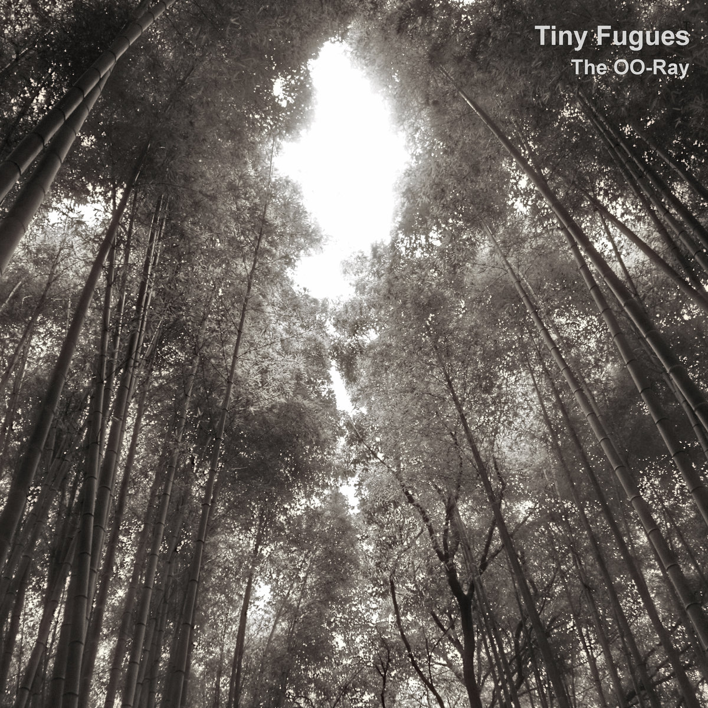

The OO-Ray
Bio
Music
Press Info
Showography
Licensing
Mailing List
The OO-Ray: Cellist, Composer, Developer
Categories
All
(22)
album
(4)
creativity
(1)
depression
(1)
fyi
(1)
mre food-review apocalypse
(1)
remembering
(1)
survival-guide
(1)
website
(1)

Foxy Digitalis Interview about Marginals
Brad Rose of Foxy Digitalis interviews with me about
Marginals
and the weight of memory. I talk about the Halifax explosion, and the words from a telegraph dispatcher that…
Aug 21, 2025
New Album: Marginals
album
I know it has been ages since I updated the website. The last post I have is just after COVID. Many things have happened since then, I have been fighting depression and the…
Aug 8, 2025

Generate Album now on Audiobulb
album
My latest album
Generate
is now on Audiobulb.
Feb 14, 2023
Undeveloped Film
survival-guide
creativity
Among other things, I am an avid photographer. I used to do a lot of black and white photography. I loved processing and printing my photos in the darkroom. One of the worst…
Dec 17, 2020
Quiescent EP for Oregon Food Bank
album
It’s been a while since I’ve done a proper release. I’ve also been feeling pretty powerless since the coronavirus is devastating so many people, not only physically but…
Mar 29, 2020
My episode of Form the Head
I had the pleasure of talking with Jason Walker on his
Form the Head
podcast about music, collaboration, science, and art. Have a listen! Trigger warning: we talk about…
Mar 5, 2020
It’s been a while
depression
I wish I had a good reason for not posting on this blog and staying away from the music scene. The truth is, I think I had a variety of reasons.
Mar 4, 2020
Ted Laderas
Remembering Brian Young
remembering
Last Friday I found out that Brian Young (also known as losingtoday) committed suicide. I’m pretty devastated by this. Brian was a wonderful member of the Portland ambient…
Aug 3, 2018

Tiny Fugues out today on Audiobulb
album
Hello everyone - I’d just like to announce that
Tiny Fugues
, my follow-up to
Empty Orchestra
, is out now on Audiobulb. It’s a little more acoustic, and a little more…
Jul 3, 2018
Food Reviews from the Apocalypse: MRE Video Reviews
mre food-review apocalypse
I often go through strange cycles when watching YouTube channels. I like cooking videos, I like travel videos, I like videos about Japan. My latest obsession is MRE Review…
Jan 14, 2018
New Website
website
fyi
Welcome to the new website. I apologize for not updating the blog with any posts, but I have been having a really terrible relationship with the Tumblr version of this site.…
Jan 7, 2018
NY Times vs. Cassette Culture
Note: Hey, my letter got published in the NY Times!
Dec 23, 2015
On Listening
Note: I was asked by Steve Ashby, who teaches a music appreciation class at Virginia Commonwealth, to contribute my thoughts on listening to music as part of his series “List…
Nov 10, 2015
On Musical Collaboration
The following essay is part of a series about survival skills for artists. Here is the link to the entire series.
Sep 23, 2015
On Theory
The following essay is part of a series I am writing on survival skills for artists. Here is the whole series.
Jul 20, 2015
Artists Survival Guide Essays now Creative Commons
I’ve decided to release my Artist’s Survival Guide Essays under a Creative Commons Attribution 4.0 International License. I feel like they’re more valuable to the community…
Jul 1, 2015
On Influences
The following essay is part of a series I am writing on survival skills for artists. Here is the whole series.
Jul 1, 2015
On Success
Or, How to suck it up and be happy for your successful friends.
Jun 22, 2015
On Depression
The following essay is part of a an ongoing series I am writing about survival skills for artists and protecting yourself from the world. If you like this, please share. Here…
Jun 9, 2015
On Recharging
The following essay is part of an ongoing series on survival skills for artists. For others in the series, click here.
Jun 5, 2015
On Craft
The following is part of a sporadic essay series I am writing on survival skills for artists. If you enjoy reading these, please share!
May 27, 2015
On Sensitivity
The following essay is the start of a sporadic column about surviving the world as an artist. If you are enjoying reading these, please leave a comment or share.
May 9, 2015
No matching items